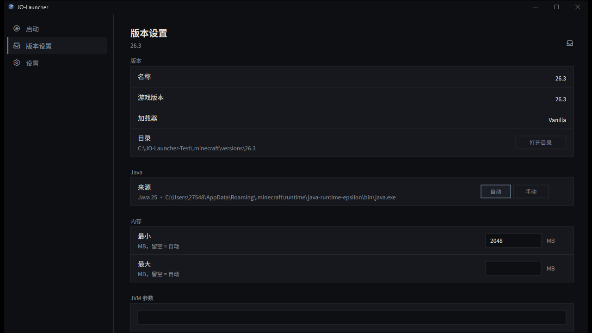

版本识别
扫描 versions/，识别 vanilla、Fabric、Quilt、Forge 与 NeoForge 安装。
开源 · Windows 桌面
JO-Launcher 是一个专注的 Minecraft: Java Edition 桌面启动器。它启动你已经装好的游戏，界面安静，不打扰你。
Windows 10/11 · Apache-2.0 · 不包含游戏文件

01 / 功能
为已经拥有 Minecraft: Java Edition、想要一个安静桌面客户端的玩家准备的一组专注工具。
扫描 versions/，识别 vanilla、Fabric、Quilt、Forge 与 NeoForge 安装。
Java 路径、内存上限与 JVM 参数保存在各版本目录里的 jolauncher.json。
选一个版本，启动与停止游戏，并在同一屏里跟进实时日志。
通过设备码流程登录你自己的微软账号，Azure 应用（客户端）ID 由你提供。
深色、浅色与跟随系统主题，可拖动的侧栏，十种界面语言。
令牌保存在本地受 Windows DPAPI 保护的文件中。没有后端，没有遥测；可在设置里删除账号数据。
02 / 为什么选 JO-Launcher
JO-Launcher 不下载、也不分发游戏。把它指向一个已有的 .minecraft 目录，启动里面已经装好的版本。
致力于成为一个专注的客户端：启动快、界面小、没有后台服务、没有广告，也不做多余的数据收集。
03 / 路线图
Linux 支持与多账号切换在计划中。登录、版本管理、导入与清理已经可用。
04 / 下载
Windows 构建、源码包与校验和发布在 GitHub Releases。你也可以用 CMake、Visual Studio 与 Python 从源码构建 JO-Launcher。